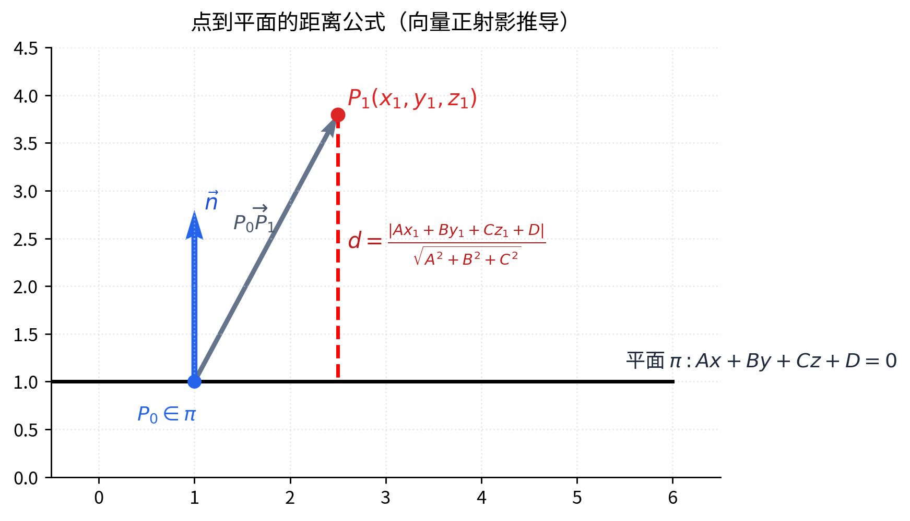
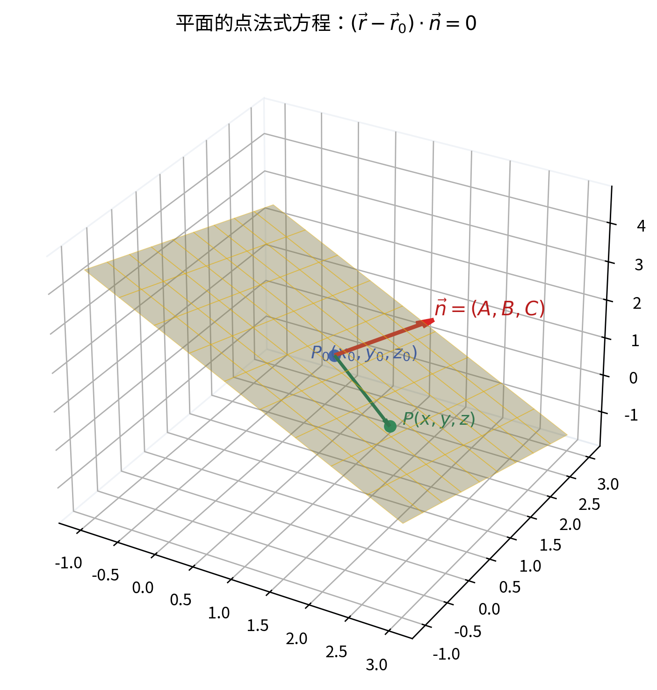

上次读到 0%
本节图形与辅助线依赖黑板原图；讲义中 [按图还原] 为文字化描述，配套课堂笔记 PDF 后续再挂图版。
一、空间平面的各种方程（00:00:24—00:53:34）

图 2: 点到平面的距离公式（向量正射影推导）

图 1: 平面的点法式方程：(r - r0)·n = 0
00:00:24—00:02:14 ｜ 决定平面的三种方式
上次我们介绍了空间中曲线与曲面一般如何推导其方程；从这节课起讲具体的。空间里最简单的一张曲面就是平面。决定一张平面有哪几种方式？
- 第一种：过点且垂直于一个给定方向（法向方向）——点法式。
- 第二种：过一点且平行于两个不共线的方向——点位式。
- 第三种：过三个不共线的点——三点式。
此外还有由这些方式衍生出来的其它等价形式，后面逐一给出。
[按图还原] 已知：一点与一法向（第一种）；一点与两方向（第二种）；三点（第三种）。作：分别画出过该点、按给定方向/法向展开的平面。得：三者都能唯一确定一张平面。图上未出现其它点线，不编造。
00:02:14—00:09:06 ｜
点法式方程与一般式方程
设点，法向量，平面上任一点 P(x,y,z) ，记，。因为在平面内，与法向量正交，所以
这就是点法式方程的向量形式：一个动点向量，减去一个定点向量，再点乘以法向量等于 0 。
老师提醒：这里用到了“垂直/正交”，而“垂直”这个概念只在直角坐标系下才有意义。在一般的仿射坐标系里，我们只有“平行”没有“垂直”，所以上述推导依赖直角坐标系下的内积。
把点法式写成坐标：
整理得平面的一般式方程
可见点法式与一般式是同一张平面的两种写法；一般式里 x,y,z 前面的系数 (A,B,C) 正是法向量。
00:09:18—00:16:39 ｜
平面与三元一次方程的等价性（反推证明与思考）
上面说“过一点且垂直于一方向的平面可写成上述两种形式”。反过来也要问：任意一张平面，以及任意一个关于 x,y,z 的一次方程，彼此是什么关系？
证明
1（00:11:43）｜ 任一三元一次方程表示空间一张平面（反推证明）
命题：方程 Ax+By+Cz+D=0 中只要 A,B,C 不全为 0 ，它所表示的图形就是空间中的一张平面；且系数 (A,B,C) 恰为该平面的法向量。
思路：先由方程找出一个满足方程的点，再证明方程等价于（点法式），从而它是一张过、法向量为的平面。
逐步推导（老师口述了“取一点、令 y=z=0 解出 x 、验证法向量”的主要步骤，下面把代数运算写全，标
[补全] 的部分是整理者按标准演算补出的，并非当堂逐字所讲）：
- 因 A,B,C 不全为 0 ，不妨设 A≠0 。令 y=0,z=0 ，解得 x=−D/A ，于是点满足方程 [补全]。
- 设，。对任意满足方程的点有
而满足 A(−D/A)+B⋅0+C⋅0+D=0 ，即。
- 两式相减得
即
[补全]。
- 这正是过点、以为法向量的点法式方程，故图形是一张平面。
结论：任意三元一次方程 Ax+By+Cz+D=0 （ A,B,C 不全为 0 ）都表示空间一张平面，且 (A,B,C) 即为其法向量。
易错点：必须 A,B,C 不全为 0 ，否则方程不表示平面（退化为常等式或无意义）。
思考题
1（00:14:48）｜ 仿射坐标系下结论是否仍成立
老师提出：在仿射坐标系下，“一张平面 ⇔
一个三元一次方程”这个结论对不对？按上面用内积（正交）的证法推不出来，因为仿射坐标系里没有“垂直”的概念，只有平行关系。老师把这个结论的正确性及其在仿射坐标系下的证明作为思考题留下
[补全]：标准结论是成立——仿射平面仍由三元一次方程表示，反之任一三元一次方程在仿射坐标系下也表一张平面；只是证明不能依赖正交，而要用共面/线性相关的语言。这部分不是当堂讲的，仅作自学参照。
00:16:39—00:23:34
｜ 点位式：一点与两方向确定的平面（混合积式/行列式式）
现在看第二种决定方式。设平面 Π 过点，并平行于两个不共线的方向、。任取平面上一点 P ，则、、三向量共面，故它们的混合积为 0 ：
即。这就是点位式（双向量式）的向量形式。
[按图还原] 已知：一点、两方向（不共线）。作：在平面上任取动点 P ，连。得：、、共面，混合积为 0 。图上只出现、动点 P 、方向，不添加其它点线。
写成坐标的行列式形式：
把行列式按第一行展开，得到的仍是 Ax+By+Cz+D=0 的一般式，且这里的法向量正是
也就是说，即使不借助“垂直”，只用“平行/共面”关系，同样能推出一般式方程。
00:23:35—00:31:48 ｜
参数方程及其与一般式的互化
给定与两方向，由共面性，可由线性表示，于是得到平面的参数方程：
坐标形式：
把看成关于 1,s,t 的线性方程组，消去参数 s,t 后得到的正是上面的三阶行列式（点位式），再展开就是一般式。老师强调：不管从点法式（依赖直角坐标系下的正交）、点位式（混合积/共面）、还是参数式（共面+线性表示）哪一个观点出发，最后都化归同一个一般式——它们是同一张平面的不同表达。
00:31:48—00:36:58 ｜
三种方程形式之间的联系
点法式的法向量从何而来？在直角坐标系下，若把两方向记为，则点位式里的法向量正是它们的叉乘；而点法式一般式里的系数 (A,B,C) 就是这个。可见：
- 点法式 → 用；
- 点位式 → 用混合积；
- 参数式 → 用。
三者通过这条通道连通，本质是同一回事情。
00:36:58—00:42:18
｜ 一般式方程的特例（过原点、平行/通过坐标轴、平行于坐标面）
给定 Ax+By+Cz+D=0 （ A,B,C 不全为 0 ），考察某些系数为 0 的特殊位置：
- D=0：点 (0,0,0) 满足方程，故平面过原点。
- A=0：法向量为 (0,B,C) ，它与 x 轴方向 (1,0,0) 正交，故平面平行于 x 轴；若同时 D=0 ，则平面含原点且平行 x 轴，即过 x 轴。
- 同理 B=0 → 平行（或当 D=0 时过） y 轴； C=0 → 平行（或当 D=0 时过） z 轴。
- A=B=0,C≠0：方程化为 Cz+D=0 ，即 z=−D/C ，平面平行于 xOy 坐标面。
- 同理 A=C=0 平行 xOz 面； B=C=0 平行 yOz 面。
老师联系上节课的射影柱面：射影柱面只要与某条坐标轴平行，该坐标轴对应的字母就不出现——这里 A=0 导致方程缺 x ，正是平面与 x 轴平行的情形。
[按图还原] 对 A=0 情形：法向量无 x 分量，与 x 轴正交，故平面平行 x 轴；图上不另添点线。
演示 1（00:36:58）｜
一般式方程特例的分类演示
任务：对 Ax+By+Cz+D=0 中某些系数为 0 的情形，判断平面的特殊位置。
思路：看缺哪个字母、常数项是否为 0 ，结合法向量与坐标轴的正交关系判定。
操作步骤（老师逐项口述，以下把判断结论写清）：
- 令 D=0 → 平面过原点。
- 令 A=0 → 平面平行 x 轴；若再 D=0 → 平面过 x 轴。
- 令 B=0 → 平行 y 轴；再 D=0 → 过 y 轴。
- 令 C=0 → 平行 z 轴；再 D=0 → 过 z 轴。
- 令 A=B=0 → 平行 xOy 面；令 A=C=0 → 平行 xOz 面；令 B=C=0 → 平行 yOz 面。
结论：一般式中哪些系数为 0 ，决定了平面处于某种特殊方位（过原点、平行或通过某坐标轴、平行于某坐标面）。
易错点：缺 x 不等于“过 x 轴”，只说明平行 x 轴；要“过 x 轴”还需 D=0 。
00:42:18—00:45:09 ｜ 截距式方程
若平面不过原点，且与三坐标轴分别交于 A(a,0,0) 、、 C(0,0,c) ，其中 abc≠0 ，则可设方程为 Lx+My+Nz+P=0 。代入三点：
- A 点： La+P=0⇒L=−P/a ；
- B 点： Mb+P=0⇒M=−P/b ；
- C 点： Nc+P=0⇒N=−P/c 。
因平面不过原点，故 P≠0 ，代回并约去 P 得
这是截距式方程，可看作平面解析几何中直线截距式向空间平面的推广。其中 a,b,c 分别是平面在 x,y,z 轴上的截距。
00:45:09—00:53:34 ｜
三点式方程（及向量/坐标记号约定）
已知不共线的三点、、。取两方向、，由点位式（混合积为 0 ）得三点式：
也可写成参数式：
不共线的三点决定一张平面，与前面的结论一致。
[按图还原] 已知：三点（不共线）。作：连成、两方向，任取动点 P 连。得：三向量共面
→ 混合积为 0 。不另添点线。
老师顺带的记号约定（学习方法提醒）：向量用大括号 {} 表示其分量，坐标用圆括号 表示。例如是向量分量写法， (x,y,z) 是坐标写法。这不是强制规定，但规范一点更清楚。
二、平面的法式方程与点到平面的距离（00:53:34—01:20:27）
00:53:34—01:01:42 ｜
法式方程：单位法向量与方向余弦
回到点法式。设平面过，法向量为，点法式为，即（为常数）。
把法向量取成单位法向量，其方向余弦记为
满足，分别表示该方向与 x,y,z 轴的夹角余弦。
在点法式两边同除以，得到
其中为常数。展开为
这就是平面的法式方程。
[按图还原] 已知：平面、原点 O 、平面上一点、单位法向（自垂直平面向外）。作：自原点向平面作垂线，得垂足与有向距离。得： p 等于原点到平面的有向距离（当法向指向与同向时 p>0 ，反向时 p<0 ）。图上不添点线。
其几何意义： p 是原点到平面的有向距离。老师说，下次课会讲法式方程的好处，今天先得到它。
01:01:42—01:04:09 ｜
一般方程化为法式方程
把一般式 Ax+By+Cz+D=0 化为法式，只需在等式两边同除以法向量的模，并选取恰当符号：
于是
且（符号与所选法向指向一致）。
证明/例题
1（01:01:49）｜ 将一般方程化为法式方程（含完整过程）
命题：把一般方程 Ax+By+Cz+D=0 化为法式方程，并说明 cosα,cosβ,cosγ,p 各等于什么。
思路：法式方程的法向量是单位向量，故把一般式的法向量除以其模长；常数项相应调整，使方程等价。
逐步推导（老师口述了“除以法向量模长、得到 cosα 等、 p=−D/ 模”，下面把符号与公式写全，标
[补全] 者为整理者补全）：
- 法向量，模。
- 方程两边同除以（正负号决定法向指向哪一侧）：
- 于是法式方程中
且
[补全]。
结论：除以法向量模长即得法式方程；符号选取不同只改变法向指向，得到的是同一张平面的两种等价写法。
易错点：必须除以法向量的模长，不能把分母那一项漏掉——否则得到的是另一张不同的平面，而不是原平面的法式写法。
01:04:09—01:14:33 ｜
离差与点到平面的距离
给定法式方程。对空间中一点（位置向量），作 Q 为到平面的垂足（ Q 在平面上）。定义关于该平面的离差δ 为向量在单位法向上的射影：
因 Q 在平面上，满足，即，故
也就是说：把点的坐标代入法式方程的左边，所得就是离差。
- ：在法向指向的一侧；
- δ<0 ：在另一侧；
- δ=0 ：在平面上。
由此立刻得到：一张平面把整个空间一分为二——点要么在正向侧、要么在负向侧、要么在平面上。这是“平面分空间为两部分”的一种证明方式。
证明
2（01:04:09）｜ 离差公式与点到平面距离公式的推导
命题：设平面法式方程为，点到该平面的离差与距离分别为
思路：离差是“点到平面的有向垂线段长度”，等于在法向上的射影；利用 Q 在平面上消去得到只含的公式。距离即离差的绝对值。
逐步推导（老师口述了“连、在法向上射影、 Q 在平面上故、代入得 δ ”，下面写全）：
- 取垂足 Q ，则平行于，离差。
- Q 在平面上：。
- 代入得，即把坐标代入法式方程左边 [补全]。
- 若从一般式 Ax+By+Cz+D=0 出发，先化为法式（除以），再把代入，得
- 距离为离差的绝对值：
结论：点到平面的有向距离（离差）由代入法式方程得到，点到平面的欧氏距离为其绝对值，即上述公式。
易错点 /
意义：若只关心“在哪一侧”，要保留符号（离差）；若只求距离，加绝对值即可。符号在确定两平面的角平分面时有用——两张平面的角平分面对应离差相等或相反，必须靠离差符号判断取哪一张平分面，不能随手选一个
[补全：角平分面的具体方程老师未在此推导，留待应用，仅作提示]。
01:14:37—01:20:27 ｜
距离公式总结与角平分面（应用提示）
把一般式化为法式后，点到平面的距离公式最为简洁：
老师提醒：法式方程的价值之一，就是让离差与点到平面的距离计算变得直接——把坐标代进去即可。
关于角平分面：若有（或视作有）两张平面，要找它们的角平分面，需要判断所求点在哪一张平分面的哪一侧，此时必须借助离差的符号来选取正确的那一张，而不是两张都算、随意挑一个。这部分今天先放一放
[补全：角平分面的具体方程与符号判别留待后续，此处仅作应用提示，非当堂完整推导]。
三、空间直线及其方程（01:20:33—01:37:09）
01:20:33—01:29:15 ｜ 点向式与对称式方程
决定空间一条直线有几种方式？最基本的是：过一点且平行于一个方向。
设直线过点，方向向量。任取直线上动点 P ，则，故存在参数 λ 使
即参数方程
坐标形式：
若 l,m,n 全不为 0 ，消去 λ 得对称式（点向式）方程：
[按图还原] 已知：一点与一方向。作：连与动点 P 。得：。图上只出现、 P 、方向，不另添点线。
老师说明分母为 0 的记号约定：若某个分量为 0 （如 l=0 ），真正含义是，其余两式仍按对称式书写；分母写 0 只是记号，对应坐标恒等于该定值，判断时不要被这个“分母为 0 ”误导。
01:29:15—01:33:41 ｜
一般式方程（两平面交线）及其与对称式的联系
空间直线也可看作两张不平行平面的交线：
其中两平面法向量、不成比例（即不平行）。这称为直线的一般式方程。
直线的方向向量同时平行于两张平面，故既正交于又正交于，于是可取
由此可从一般式求出方向向量，再配合直线上一点，化为对称式；反之对称式（两个等式）本身也可改写为两个平面方程。两种形式互通。
01:33:41—01:36:37 ｜
两点式方程与形式的互化
若直线过两点、，则方向向量即。代入对称式得两点式方程：
对称式与一般式可互相转化：通过解一般式方程组可取出一点与一个方向，写成对称式；把对称式拆成两个等式则得到一般式。
例题 1（01:34:01）｜
两点求直线方程（两点式）
命题：已知空间两点、，求过这两点的直线方程。
思路：以为方向向量，用其中一点作定点，代入两点式（即对称式）。
逐步推导（老师口述“两点求直线、方向就是、代入对称式”，下面写全）：
- 方向向量。
- 取定点，得直线的对称式：
- 等价地也可写为参数式。
结论：过两已知点的直线由两点式给出，方向即两点连线。
易错点：两点式的分母就是两坐标之差；若某坐标相等（分母为 0 ），对应坐标恒等于该值，按前述记号约定处理。
01:36:57—01:37:09 ｜
课程事务：课堂练习安排
老师说明课程考核中的课堂练习安排：本学期计划安排若干次随堂练习；近期打算在周三下午的课上抽出约
50 分钟做一次课堂练习，具体时间以课程群通知为准
[按课堂管理语境还原，属于考核/练习相关有效信息，保留]。